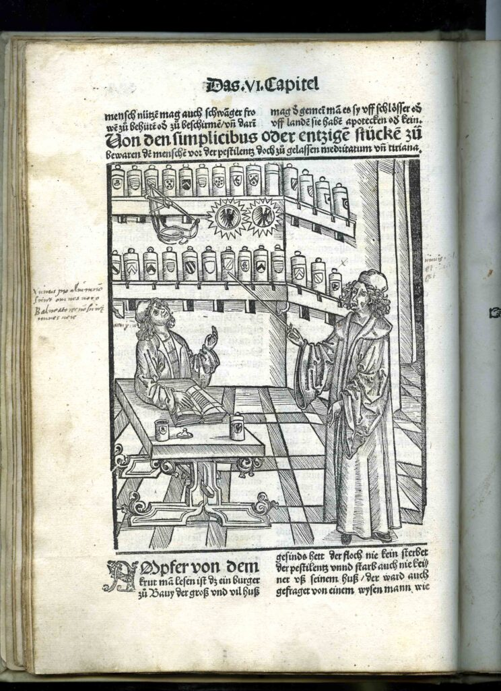

The Archives and Special Collections will be closed from Monday, December 23, 2013 through Wednesday, January 1st, 2014. We will reopen on Thursday, January 2nd.
Monthly Archives: December 2013
{kind=link}
Eric Berne Papers Processing Project Now Underway
A new project to process the manuscripts and personal papers of Eric Berne, bestselling author of Games People Play and the founder of the Transactional Analysis approach to psychotherapy, is now underway. The project will produce detailed collection guides and provide online access to significant records of Berne’s life and work.
A Canadian-born psychiatrist who settled in San Francisco and Carmel, CA, Eric Berne developed his theory of Transactional Analysis (TA) to augment the traditional thinking of psychiatrists and to provide better mental health care to individuals and groups. He viewed social interactions as basic exchanges, or “transactions” between people, who acted from one of three ego-states (Parent, Adult, or Child) in order to get what they want. Berne termed these common transactions “games” and analyzed them using frank and often humorous titles like “Why Does This Always Happen to Me” (WAHM) and “Let’s You and Him Fight” (LYAHF). When Games People Play was published in 1964, it sold over 2 million copies and spent 111 weeks on the New York Times bestseller list.

Cover of 1966 British edition of “Games People Play”
In addition to his writing career and his private practices in Carmel and in San Francisco, Berne ran popular Tuesday evening seminars from his home and consulted with psychiatrists in the United States and around the world. He founded the International Transactional Analysis Association in 1964 to connect TA practitioners and to provide continuing education through lectures, conferences, and publications.
Berne also gave lectures at UCSF’s Langley-Porter Psychiatric Institute during the 1960s. He was the headliner for the 1966 Jake Gimbel Sex Psychology Lecture series, and later turned his material into another major book (Sex in Human Loving).

Postcard for the 1966 Jake Gimbel Sex Psychology Lectures at UCSF
Thanks to the recently received gift, several different collections of Berne’s papers will now be preserved and organized for researchers and visitors. As a first step, we’re surveying the 26 boxes and cartons of material and have already uncovered original drafts of Berne’s writings, travel diaries, and letters from major figures like Gertrude Stein and Alfred Kinsey, as well as from hundreds of Berne’s fans and fellow practitioners.
For more information about the International Transactional Analysis Association’s Eric Berne Archives project, please visit http://www.ericbernearchives.org/. And stay tuned for further updates on this fascinating collection!
Archives receives a gift to process and digitize Eric Berne collections
We are happy to report the archives recently received a generous gift through the International Transactional Analysis Association (ITAA) that will support the processing and cataloguing of Eric Berne collections preserved at the UCSF Library. It will also permit us to make a comprehensive and sizable part of his papers available online through the archives website so that researchers, practitioners, and general public can easily access and search it at any time.

Eric Berne, M.D., 1969. Eric Lennard Berne Papers, 1959-66, MSS 82-0.
Dr. Eric Berne (1910 –1970) was the founder of Transactional Analysis and since the beginning of 1980s the archives has been serving as a repository of his papers, including correspondence, photographs, films, and manuscripts. These collections were donated to UCSF by his former colleagues from the ITAA and also members of the Berne family.
Dr. Berne’s archival materials will continue to be a valuable resource for scholars researching his life and theory and to Transactional Analysis practitioners who wish to develop a deeper understanding of the man and his body of work.
This fundraising campaign was spearheaded by Carol Solomon Ph.D., Transactional Analyst based in San Francisco. The efforts quickly spread internationally to include Terry Berne (Eric’s youngest son) in Spain, Ann Heathcote in the United Kingdom, Gloria Noriega in Mexico, and Marco Mazzetti in Italy.
We are grateful to all dedicated donors from the ITAA, the European Association for Transactional Analysis, and other associations in the United States and around the world as well as many individuals and Eric Berne’s family for contributing funds for this project. Thanks to their generosity this gift allowed the archives to hire a project archivist, Kate Tasker who at the end of September started working on arranging several Eric Berne collections and preparing their finding aids. She will be regularly posting updates about the progress of the project and profiling treasures from these collections.
Kate is a recent graduate of San Jose State University’s Master of Library and Information Science (MLIS) program. She has worked in the archival field for the past three years, and became a member of the Academy of Certified Archivists in August 2012. Kate also holds a B.A. in History from Sonoma State University, where she focused on social history.
And today I would like to introduce Kate’s first story chronicling the Eric Berne processing and digitization project at UCSF.
Season’s Greetings!
We’ve no shortage of stunning, interesting, and unique images in our collections. The task of choosing an image to feature on the library’s holiday card brought up a wealth of options. The winner? The lovely Magnolia below.

Magnolica Glauca, Plate XXVII
The Magnolia glauca, or small magnolia, comes to us from Jacob Bigelow’s American Medical Botany, 1817-1820. According to Bigelow, Magnolias “are distinguished by their rich, smooth foliage, large fragrant flowers, and aromatic bark… They begin to flower in different parts of the United States in May, June and July. The flowers are highly fragrant, and may be perceived by their perfume at a considerable distance.” The text goes on to classify Magnolia as an aromatic tonic that is most effective in treating chronic rheumatism.
Published as a three volume set in Boston, American Medical Botany is a compendium of plants and their medicinal uses. Each plant is illustrated and described in detail. American Medical Botany was one of the first botanical books printed with color. (The other, also in our collection, is Benjamin Barton’s Vegetable Materia Medica of the United States of the same year.) To avoid the time-consuming process of hand-coloring each of the sixty plates in each printing, Bigelow invented a mechanical method of printing the engraved plates and tinting them simultaneously. Read on to see more beautiful prints!
New AIDS history exhibits at the library
We would like to invite all of you to visit two new exhibits currently on view at the UCSF Library:
Surviving and Thriving: AIDS, Politics, and Culture
This banner exhibition utilizes a variety of historic photographs, pamphlets, and publications to illustrate how a group of people responded, or failed to respond, to HIV/AIDS. The title Surviving and Thriving comes from a book written in 1987 by and for people with AIDS that insisted people could live with AIDS, not just die from it. Jennifer Brier, the exhibition curator, explains that “centering the experience of people with AIDS in the exhibition allows us to see how critical they were, and continue to be, in the political and medical fight against HIV/AIDS.” Surviving and Thriving presents their stories alongside those of others involved in the national AIDS crisis. NLM curators used several images and documents from the UCSF Archives in the exhibit and its companion website: http://www.nlm.nih.gov/survivingandthriving/. This travelling NLM exhibit will be at the library until January 4th, 2014. UCSF is the only location in the Northern California to host this exhibit. Please check this page for location and hours.

National Library of Medicine (NLM) travelling exhibit “Surviving & Thriving: AIDS, Politics and Culture” on display at the UCSF library.
UCSF AIDS History Project: Documenting the Epidemic
The UCSF Archives and Special Collections organized a companion exhibit that showcases materials from the AIDS History Project (AHP). The AHP began in 1987 as a joint effort of historians, archivists, AIDS activists, health care providers, and others to secure historically significant resources about the response to the AIDS crisis in San Francisco. This collection includes selected records from numerous AIDS-related agencies and community-based organizations in the Bay Area, diaries from AIDS activists, papers of clinicians, health care workers, and researchers working at SFGH and UCSF, as well as materials collected by social scientists and journalists. AHP continues to grow and its collections remain the most heavily used among Archives’ manuscript holdings.

The original Ward 86 doctors: Paul Volberding, Connie Wofsy, and Donald Abrams.
Photo from Ward 84/86 Records, MSS 94-61. Courtesy of UCSF Archives and Special Collections.
Treating the plague in 1500
The Archives and Special Collections at UCSF Library maintains an extensive collection of rare books in many fields of health sciences. Due to their unique and often fragile nature, rare books are available for use only under supervision. One of the most interesting books in the collection is Liber pestilentialis de venenis epidemie, written in German by Hieronymus Brunschwig and published in Strassburg in 1500. This first edition book was acquired in October 1955 from a rare bookseller in New York City, for a mere $650.00. A transaction note in the book indicates it to be an excessively rare book, especially given its good and complete condition.

{kind=link}
Hieronymus Brunschwig, Liber Pestilentialis de venenis epidemie,1500
This book is an example of incunabula – books printed between the 1450’s and January 1501, using metal type attributable to the transformative printer, Johann Gutenberg. You can note the black and angular gothic print, popular at the time. And as was the convention of the time, the parchment used was known as vellum made from calfskin that is bleached. The book includes 23 large woodcuts, and printed “pointed hand” nota marks in the margins. The book constitutes 40 leaves, or what we would call 80 pages today.

Hieronymus Brunschwig, Liber Pestilentialis de venenis epidemie,1500
This particular book is considered to be one of the most important documents of its time for the history of contagious diseases, in particular its devotion to means of avoiding and treating the plague. While little is known about the author, army surgeon Hieronymus Brunschwig, he is known to have been a scholar in the field of surgery and credited for having taken advantage of the recently invented printing press to gain influence. He is best known for his first book, Buch der Cirurgia, Hantwirckung der Wundartzny, which served as a guidebook for surgeons and those in training. Also notable for its woodcuts and early specimens of medical illustration, this book draws extensively on Brunschwig’s own experience, and contains the first detailed accounts of gunshot wounds in medical literature.
For more information, please refer to these sources:
Dawn of Western Printing. (2004). Incunabula. http://www.ndl.go.jp/incunabula/e/index.html
Tubbs, R. S., Bosmia, A. N., Mortazavi, M. M., Loukas, M., Shoja, M., & Gadol, A. A. C. (2012). Hieronymus Brunschwig (c. 1450–1513): his life and contributions to surgery. Child’s Nervous System, 28(4), 629-632.
Waife, S. O. (Ed). (1976). Notable medical books. Lilly Research Laboratories.
Stone’s Synchrotron
This season’s issue of UCSF Magazine, Fall 2013, includes a story inspired by a photograph in our collection and features an audio clip from one of our oral histories.
{kind=link}
This compelling photograph (which, despite appearances, is not a scene from a sci-fi movie) depicts Dr. Robert Stone with the machine he created, the 70MeV electron synchroton. The synchrotron was a type of particle accelerator used to treat cancer patients with radiation from 1956 to 1964. Stone’s work contributed greatly to the safe clinical use of radiation.
The article in UCSF Magazine goes on to elaborate on Stone’s impact here at UCSF and on the wider medical community. The online version of the article also highlights a clip of Stone’s oral history, OH 23, taken in 1964. Be sure to check it out to hear Stone’s story in his own words!
View the issue as an online flipbook, download a pdf, download the iTunes app, or download the Android app. “Robert Stone and the Synchrotron” appears on page 50 of the Fall 2013 issue.
You can read more about Stone’s role in the history of Radiation Oncology at UCSF from 1928-1962 here.